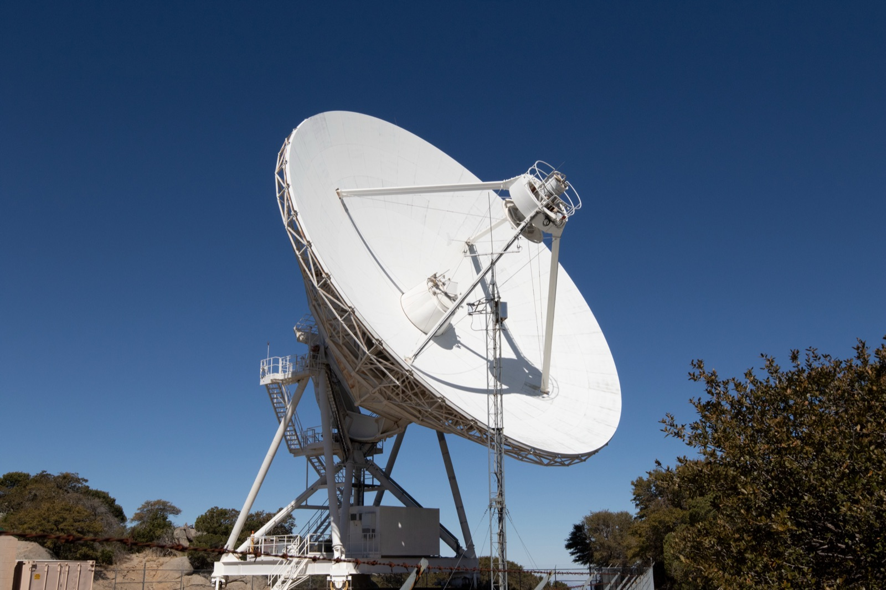

Executive Summary
8월 26일 네이처에 실린 논문 한 편이 블레이자 3C 345의 제트를 끊김 없이 흐르는 영상으로 복원했다. 재료는 1995년부터 2022년까지 VLBA가 15기가헤르츠로 찍은 관측 116회다. 지금까지 전파간섭계 영상은 관측 한 번에 정지 화면 한 장을 만들어 시간순으로 늘어놓는 방식이었는데, kine이라는 알고리즘은 116회를 신경망 하나에 함께 넣어 시간에 대해 연속인 함수로 풀었다. 스페인 IAA-CSIC과 칼텍, 토론토대 연구진의 작업이고, 저자 중 캐서린 보우먼은 사건지평선망원경의 블랙홀 영상 복원 알고리즘으로 알려진 계산영상 연구자다.
영상이 시간에 대해 연속이면 아무 시점이나 뽑아 볼 수 있고, 프레임 사이의 움직임도 계산된다. 연구진은 여기에 광학흐름을 걸어 화면 어느 지점에서든 플라스마의 순간 속도를 쟀다. 기존 방식이 잴 수 있던 것은 눈에 띄는 밝은 덩어리 몇 개의 이동 속도뿐이었다. 다만 27년 동안 관측은 드문드문했고, 규칙적인 간격으로 프레임을 뽑기 위해 관측이 없는 시점은 모델이 채웠다.
논문은 그 사실을 감추지 않는다. Methods는 가장 가까운 관측에서 5.7개월 떨어진 보간 프레임까지 광학흐름 분석에 썼다고 적어 두었다. 실측과 보간이 같은 영상 안에 섞여 있고, 둘을 구분하는 표시는 영상이 아니라 그 옆 타임라인에 놓여 있다. 결측을 채운 화면을 만들어 본 사람에게는 남의 일이 아닌 배치다.
주요 수치
출처: Foschi 등(2026), Nature, DOI 10.1038/s41586-026-10988-5 본문 및 Methods
116회
한꺼번에 푼 관측
1995~2022년 VLBA 15GHz 3C 345
113 μas
검증 시험에서 얻은 유효 해상도
회절한계가 정한 명목 475 μas의 4.2배
5×10⁵
달성한 다이나믹레인지
CLEAN 3.6×10³ 대비 두 자릿수 상승
5.7개월
관측에서 가장 멀리 떨어진 보간 프레임
이 프레임이 속도장 계산에 쓰였다
116번의 관측을 하나의 함수에 넣었다
VLBI는 지구 곳곳의 전파망원경을 묶어 지구만 한 망원경 하나처럼 쓰는 관측 방식이다. 망원경이 놓이지 않은 자리의 신호는 끝내 받지 못하므로, 받은 신호에서 영상을 만드는 일은 처음부터 답이 하나로 정해지지 않는 문제다. 오래 쓰인 표준은 CLEAN이었다. 관측 한 번의 데이터로 정지 화면 한 장을 만들고, 다른 시기 관측은 다른 화면으로 따로 만든다. 그렇게 만든 화면을 순서대로 이으면 프레임마다 잡음 구조가 달라 영상이 튄다.

kine은 화면 대신 함수를 만든다. 적경과 적위, 그리고 시간을 넣으면 그 자리 그 시각의 밝기와 편광을 돌려주는 신경망 하나가 영상 전체를 대신한다. 총강도만 다룰 때는 4층, 편광까지 다룰 때는 6층이고 층마다 노드가 256개인 단출한 구조다. 학습할 때 공간 좌표는 200×200 격자에서 고르게 뽑고, 시간 좌표는 실제 관측 시각을 따라간다. 116회 데이터 전체를 이 함수 하나에 맞추는 데 A100 4장으로 1.3시간이 걸렸다.
한꺼번에 푸는 이유는 프레임끼리 정보를 빌려 쓰게 하기 위해서다. 어느 회차는 날씨나 망원경 사정으로 데이터가 부실한데, 앞뒤 회차가 그 빈자리를 받쳐 준다. 빌리는 방식은 간접적이다. 제트가 대체로 이런 모양일 것이라는 형태 가정을 따로 걸어 두지 않고, 프레임들이 서로 닮았다는 상관을 신경망이 학습하면서 암묵적으로 강제한다. 논문은 이것을 명시적인 형태 사전분포가 아니라 암묵적 정규화라고 부르며, 그래서 천체 종류를 가리지 않고 손으로 맞출 하이퍼파라미터도 적다고 설명한다.
얻은 것은 두 가지다. 유효 해상도는 합성 데이터 검증 기준 평균 113마이크로각초로, 회절한계가 정한 명목 해상도 475마이크로각초의 4.2배다. 다이나믹레인지는 약 5×10⁵로 기존 방식의 140배 언저리다.
둘 중 동시 재구성이 실제로 바꾼 쪽은 다이나믹레인지다. 해상도는 시간 축 없이 한 회차만 복원해도 3.8배가 나왔고 116회를 함께 풀어 4.2배가 됐으니 차이가 크지 않다. 반면 실제 3C 345 데이터에서 다이나믹레인지는 CLEAN이 3.6×10³, 한 회차씩 복원한 kine이 4.9×10⁴, 116회를 함께 푼 kine이 5.1×10⁵였다. 자릿수가 두 번 올라갔다. 데이터가 부실한 회차일수록 이 차이가 크게 벌어졌다고 논문은 적는다. 다만 이 배수들을 알고리즘의 고정된 성능처럼 옮겨 적으면 곤란하다. 해상도와 다이나믹레인지 개선은 관측의 양과 질에 달린 값이므로 데이터셋의 품질과 시간 커버리지와 무관한 고유 성능으로 읽어서는 안 된다고, 논문이 수치를 내놓기 직전에 못 박아 둔다.
계보 때문에 오해하기 쉽다. kine은 원래 사건지평선망원경이 궁수자리 A*를 관측할 때를 위해 만들어진 알고리즘이다. 그쪽은 관측 한 번이 진행되는 동안 천체가 변해 버려서, 시간을 넣지 않고는 화면을 만들 수 없는 경우다. 이번 논문이 실증한 것은 반대 경우다. 천천히 변하는 천체를 27년에 걸쳐 반복 관측한 자료이고, 초록도 이번에 보여 주는 것은 후자라고 못 박는다. 이번 결과에 블랙홀 그림자의 새 영상은 없다.
덩어리가 아니라 흐름의 속도를 쟀다
제트에서 속도를 잰다는 것은 지금까지 밝은 덩어리를 쫓는 일이었다. 화면에서 눈에 띄는 성분에 가우시안을 맞추고, 다음 관측에서 그 성분이 어디로 갔는지 찾아 위치 차이를 시간으로 나눈다. 3C 345처럼 오래 감시해 온 천체는 이 방식으로 성분마다 속도가 매겨져 있다. 다만 이 값은 덩어리가 움직인 속도이지 그 자리 플라스마가 흐른 속도가 아니다.
영상이 시간에 대해 연속이면 다른 방법을 쓸 수 있다. 연구진은 영상 처리에서 쓰는 광학흐름을 걸어 화면의 모든 지점에서 국소 속도 벡터를 뽑았다. 밝은 성분이 지나가지 않는 자리, 확산된 방출만 있는 자리에서도 값이 나온다. 물론 전제가 하나 붙는다. 화면에서 밝기 분포가 옮겨 간 것이 곧 플라스마가 옮겨 간 것이라는 가정이고, 논문도 이 가정을 문장으로 명시해 둔다.
평균 겉보기 흐름 속도의 최댓값은 코어에서 1~3밀리각초 떨어진 제트 남쪽 구간에서 12±0.2c다. 성분이 주로 방출되는 자리다. 코어에서 5밀리각초 안쪽에서는 9~11c로, 더 바깥 확산 방출 영역에서는 5~8c로 떨어진다. 겉보기 속도가 광속을 넘는 것은 제트가 시선 방향에 가깝게 놓여 생기는 효과이고, 보고된 시선각으로 환산한 실제 속도는 0.997c다. 같은 천체에서 가우시안 피팅으로 측정돼 있던 값 11.79±0.19c, 13.16±0.17c와 자릿수가 맞는다.
속도의 표준편차는 구역에 따라 크게 달라지지 않고 3~6c 사이에 걸쳐 있었는데, 연구진은 이를 플라스마 흐름이 난류에 가깝고 겉보기 속도가 수시로 바뀐다는 신호로 읽는다. 덩어리 몇 개의 궤적만으로는 나오지 않는 종류의 값이다.
3C 345의 밝은 이동 성분들은 오랫동안 제트를 따라 달리는 충격파로 해석돼 왔다. 그런데 성분의 속도가 같은 구역 배경 흐름의 평균 속도와 같은 크기로 나왔다. 밝은 성분이 10~13c, 같은 자리 배경 플라스마의 평균 속도가 9~12c로 범위가 겹친다. 밝은 지점과 편광도의 봉우리 사이에 상관도 보이지 않았다. 충격파라면 플라스마가 압축되면서 자기장이 정렬돼 그 자리의 편광도가 올라가야 하는데, 이 제트의 편광 구조가 가리키는 토로이달 자기장에서는 특히 그래야 한다. 그런 국소 상승이 관측되지 않았다. 연구진은 그래서 이 성분들을 충격파가 아니라 자기압이 국소적으로 높아져 방출이 강해지고 도플러 부스트가 걸린 영역으로 읽는다. 덩어리만 쫓던 시절에는 견줄 대상 자체가 없어 던질 수 없던 질문이다.
매끄러운 영상에 보간이 얼마나 들어갔나
MOJAVE 감시 프로그램의 관측은 일정한 간격으로 이뤄지지 않는다. 27년에 116회이니 평균은 석 달에 한 번꼴이지만, 실제로는 촘촘한 시기와 비는 시기가 섞여 있다. 신경장은 시간을 연속으로 다루므로 관측이 없는 시각을 넣어도 화면이 나온다. 논문은 이것을 불규칙한 관측 주기 문제를 우회한다고 표현한다.
광학흐름은 규칙적인 간격의 프레임을 요구한다. 그래서 속도장 분석에 들어간 영상은 관측 시각 그대로가 아니라 일정 간격으로 다시 뽑은 것이다. Methods의 해당 문장은 이렇게 되어 있다.
kine provides good, motion-preserving time interpolation for frames up to 6 months apart from the nearest observations. In the present work, we use time-interpolated frames in the optical flow analysis to have a video sampled at regular intervals. The longest separation between an interpolated frame and the nearest observation is 5.7 months, which is within the range of reliable interpolation.
3C 345 정도의 관측 밀도와 품질이면 가장 가까운 관측에서 6개월 떨어진 프레임까지 움직임을 보존하는 시간 보간이 잘 된다고 보고, 이번 작업에서 실제로 쓴 프레임 중 관측에서 가장 멀리 떨어진 것은 5.7개월이니 신뢰할 만한 범위 안이라는 판단이다. 그 6개월이라는 한계선은 3C 345의 형태와 관측 커버리지, 잡음을 본떠 만든 합성 데이터로 검증해 얻었다. 다만 프레임 보간의 세부와 광학흐름의 한계를 정리한 자료는 본문이 아니라 보충자료에 있다고 저자들은 적어 둔다.
같은 논문 안에 정반대 처리도 있다. 편광의 시간평균을 낼 때는 1995년부터 2000년까지 편광 데이터가 없다는 이유로 2001년 6월 이후 프레임만 넣었다. 없는 구간을 계산에서 뺀 것이다. 모순은 아니다. 시간평균은 있는 값의 평균이어야 하고 속도장은 연속된 화면이 있어야 계산되니, 같은 결측이라도 목적에 따라 처리가 갈린다. 다만 어느 계산에서 채우고 어느 계산에서 뺐는지는 결과물을 보는 사람에게 보이지 않는다.
데이터가 있는 시각과 분석에 쓴 프레임의 시각을 같은 축 위에 두 줄로 늘어놓으면 이 구조가 보인다. 위 줄은 27년 동안 관측이 실제로 이뤄진 날들이고 아래 줄은 광학흐름이 요구하는 고른 간격이다. 두 줄이 어긋나는 자리에 들어간 것이 모델이 학습한 시공간 상관으로 채운 화면이며, 가장 크게 벌어진 곳이 5.7개월이다.
채운 값과 잰 값을 화면에서 누가 구분하나
논문에도 구분 장치는 있다. Figure 1 캡션에 한 줄이 들어가 있다. 고른 프레임에 해당하는 날짜를 타임라인 위에 빨간색으로 찍어 두었다는 문장이다. 관측일이 어디에 있는지 알고 싶으면 그 타임라인을 보면 된다.
장치는 거기까지다. 프레임 자체에는 이 화면이 관측에서 나왔는지 보간에서 나왔는지 적혀 있지 않다. 논문을 처음부터 읽는 천문학자에게는 문제가 되지 않는다. Methods를 읽었을 것이고 타임라인도 봤을 것이다. 어긋남은 영상이 논문 밖으로 나갈 때 생긴다. 보도자료에, 발표 슬라이드에, 소셜 미디어에 실려 도는 것은 매끄럽게 흐르는 제트 영상이지 그 옆 타임라인이 아니다.
기술적으로 까다로운 일이었다면 이야기가 다르겠지만 그렇지도 않다. 관측일 목록은 이미 손에 있다. 프레임 모서리에 점 하나를 찍거나 보간 구간에서 테두리 색을 바꾸는 정도면 된다. 하지 않은 이유는 능력이 아니라 우선순위다. 그 표시를 어디에 둘 것인가, 가장 먼저 눈에 들어오는 화면인가 아니면 그 화면을 설명하는 보조 그래프인가.
같은 질문이 천문학 밖에도 있다. 결측을 앞뒤 값으로 채운 시계열, 응답이 없는 구간을 모델이 메운 대시보드, 표본이 부족한 지역까지 색이 칠해진 지도. 화면에서 채운 값과 잰 값은 같은 굵기의 선으로 나온다. 페블러스가 앞서 다룬 생성형 세계모델 영상의 물리 검증은 그럴듯함이 관측을 대신하는 경우였고, kine은 그 반대편에 있다. 실측 데이터가 매 프레임을 강하게 잡아당기는 재구성이다. 그런데도 화면만 놓고 보면 둘은 똑같이 매끄럽다.
구분해 표시할 책임이 도구를 만든 쪽에 있는지 결과를 인용하는 쪽에 있는지는 정해진 답이 없다. 다만 이 논문처럼 어느 프레임이 관측이고 어느 프레임이 보간인지 저자가 이미 알고 있는 경우라면, 그 정보가 화면까지 따라오지 못할 이유도 없다. 관측 데이터는 MOJAVE 아카이브에, 재구성 영상과 분석 노트북은 깃허브에 공개돼 있어서, 어느 프레임이 어느 관측일에 대응하는지는 확인해 볼 수 있다.
참고문헌
- 1.Foschi, M., Zhao, B., Fuentes, A., Bouman, K. L., Gómez, J. L., & Levis, A. (2026). "Video reconstruction of variable VLBI observations with neural fields." Nature. DOI: 10.1038/s41586-026-10988-5